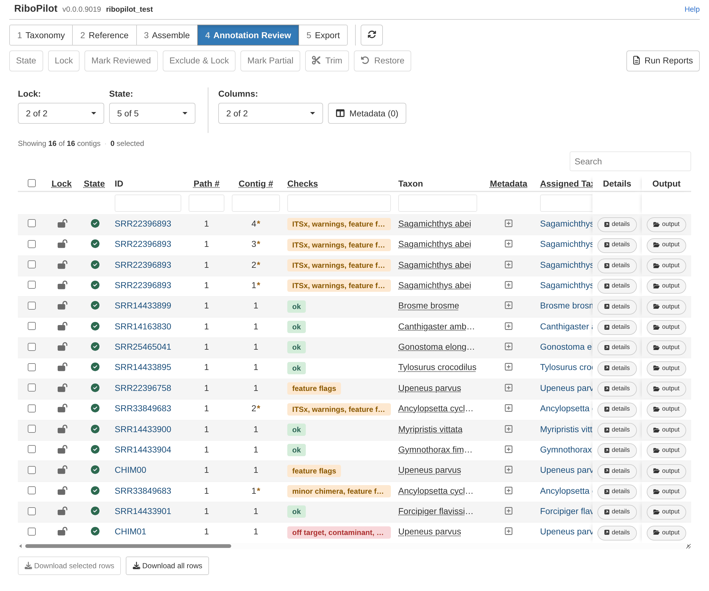
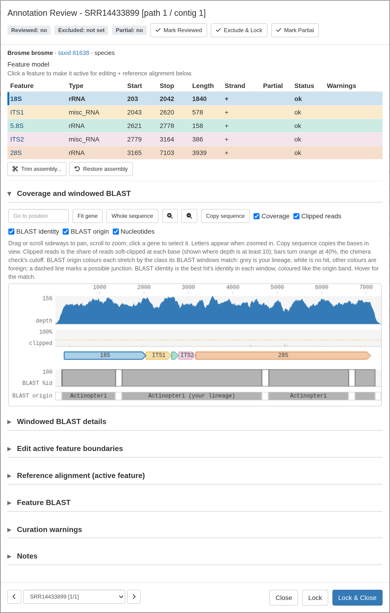
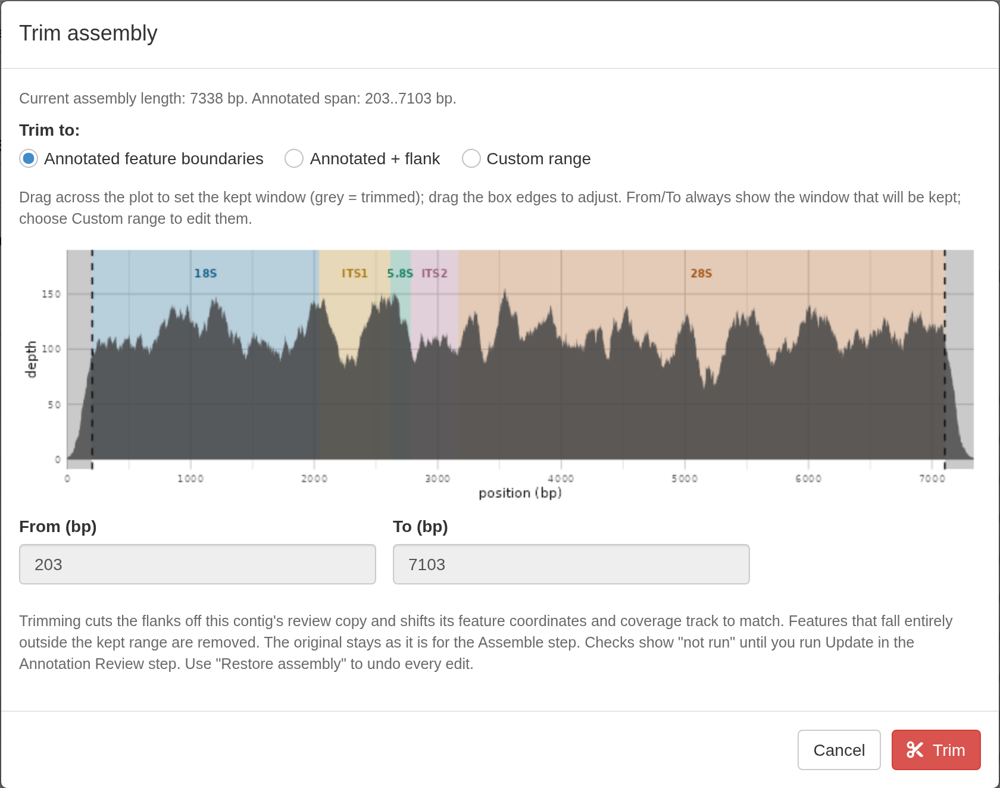
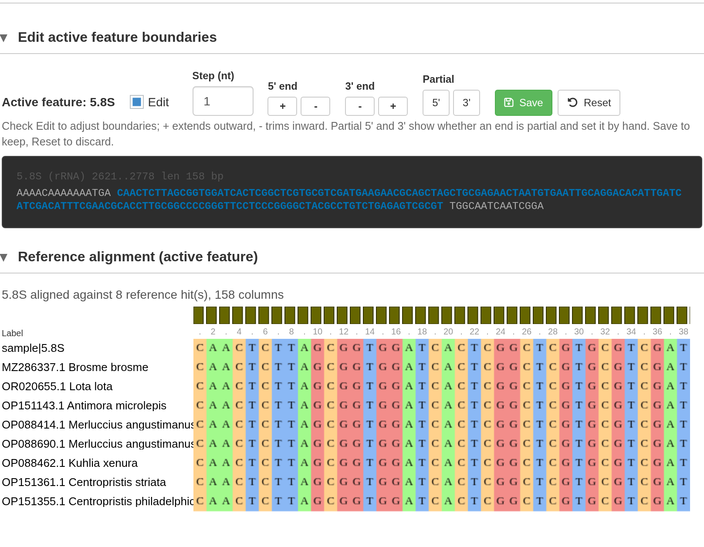
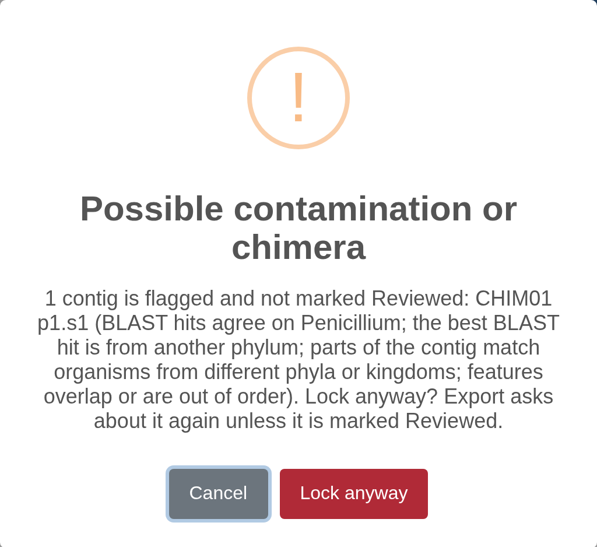

Test project: Annotation Review
Test project: 0. Get started 1. Taxonomy 2. Reference 3. Assemble 4. Annotation Review 5. Export
For the test project, do this:
- Click a contig’s ID to open its details window, look over its features and checks.
- Close the window, then tick every row.
- Press Lock. The app asks about CHIM01, which is flagged; choose Lock anyway.
Contigs must be locked here before they can be exported. The rest of this page explains what you are looking at.
Each kept contig of a locked sample is one row:

The Checks column summarizes the checks for each contig. The Warnings, ITSx Warnings, Screen, Chimera, and Feature BLAST warnings columns show a breakdown of each contig check.
Quality checks and flags explains what each warning means.
Examining contig details
Click a contig’s ID to see more details.

At the top of this window, two buttons record what you decided about a contig: Mark Reviewed and Exclude & Lock. A badge beside them shows whether the contig is complete or partial.
Lock locks the contig and keeps the window open; Lock & Close locks it and closes the window. Neither marks it Reviewed. If the contig failed some of the checks and is not marked Reviewed, RiboPilot will print warning messages when you attempt to lock the sample.
A locked contig is read only. To make any edits, unlock it first. Only contigs that are locked can be exported. Only one assembly path can be locked per sample: paths are alternative reconstructions of the same rDNA repeat, so a sample should only export one. However, multiple contigs can be locked and exported for the same sample.
Below that is a table of annotated features (18S, ITS1, 5.8S, ITS2, 28S).
Next is the Coverage and windowed BLAST panel, which draws the contig as an interactive plot. The plot contains several tracks: read depth, the percentage of clipped reads, the features (arrows indicate orientation, dashed ends are partial annotations), the base pairs (once you zoom in), and the chimera check’s window BLAST identity and taxon tracks. Scroll to zoom, drag to pan, or type a position. Clicking a gene makes it the active feature that will show up in the Edit active feature boundaries and the Reference alignment panels below.
Trimming the contig
GenBank tends to reject submissions containing sequence outside the core 18s-5.8s-28s region. So for a real submission, it is best to trim your contigs before export.
To trim many contigs at once, tick them in the Annotate Details table and press Trim in the toolbar. Choose Match gene ends to keep only the annotated span, or Gene ends + flank to keep a few extra bases on each side. Only contigs with all five features (18S, ITS1, 5.8S, ITS2, and 28S) can be trimmed using this bulk trim button.
To trim partial contigs, open the details window and click Trim assembly. The window plots read depth with the features colored and the kept range marked. Choose Annotated feature boundaries, Annotated + flank, or Custom range, where you can type the range or drag across the plot to set it.

RiboPilot always saves the original contig, so you can use the Restore button (or Restore assembly in a contig details window) to undo a trim. Restore returns the contig to its original sequence, features, and check results: it undoes every trim, gene boundary edit, and 5’/3’ choice on the contig. Your Reviewed and Exclude marks, notes, and export group stay as they are.
Editing feature boundaries
The Edit active feature boundaries and Reference alignment panels can be used to modify the boundaries of the selected feature. First, click a row in the feature table, or a gene arrow in the viewer, to select that feature. Then open these panels to make adjustments. All other figures will be updated whenever you adjust an annotation.

Tick Edit to show the controls. Step (nt) sets how many bases each click moves a boundary, from 1 to 50. Under 5’ end and 3’ end, + extends the feature outward and - trims it inward. The Partial buttons allow you to manually mark the 5’ or 3’ end as partial, which will be reflected in the exported files.
Each time you edit a feature, the feature table, the sequence viewer, and the reference alignment will update. Press Save to keep the edit, or Reset to put the boundaries back. Moving one feature’s boundary does not adjust its neighbor, so a gap or overlap between them shows up as a warning after the next Update.
Reference alignment aligns the active feature against its top BLAST hits. Use the alignment to check that your feature is consistent with other published sequences. The panel is empty when the pipeline found no reference hits for the feature.
Updating checks after edits
After a trim or an edit to gene boundaries, the contig’s checks are marked “not run”. Trims and edits modify a working copy of the contig, so the original remains untouched. Until the checks are run again, the contig’s State shows Ready to run, and its check columns and Checks say “not run”.
To rerun the checks, press Update in the Annotation Review toolbar, then Run from App (on a cluster, the window offers a job script, as in the Assemble step).
Locking contigs when done
Only locked contigs reach the Export step, so lock each contig once you are happy with it. Tick the rows and press Lock in the toolbar, or use Lock or Lock & Close in a contig’s details window. The same button unlocks a locked contig.
Lock checks a few things first:
- Every selected contig’s checks must be done. If any show “not run”, nothing is locked, and a message lists those contigs with “Press Update first.”
- Only one assembly path can be locked per sample. Paths are alternative reconstructions of the same rDNA repeat, so a sample should only export one. Several contigs of the same path can be locked together.
- A contig flagged by the BLAST screen or the chimera check prompts a warning message. . Choose Lock anyway to continue. The Export window asks about it again unless you mark it Reviewed.

A locked contig is read only. To trim it or move a boundary, unlock it first. To keep a contig out of the export altogether, use Exclude & Lock.
For the test project, tick every row, press Lock, and choose Lock anyway for CHIM01.